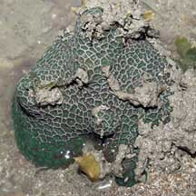
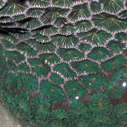
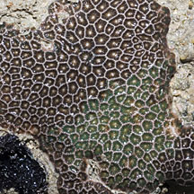
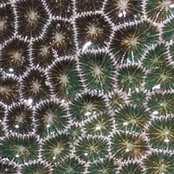

|
|
| hard corals text index | photo index |
| Phylum Cnidaria > Class Anthozoa > Subclass Zoantharia/Hexacorallia > Order Scleractinia |
| Neat
hexagonal coral Pseudosiderastrea tayamai* Family Siderastreidae updated Nov 2019 Where seen? This hard coral with relatively neat hexagonal corallites is among the few hard corals more regularly seen on our northern shores. They are also seen on our southern shores. According to Veron, they are found in very shallow water attached to bare rock and are considered uncommon and cryptic. The genus has only one species. Features: Colonies seen 5-10cm. The colony is generally encrusting or a smooth dome-shape, but somewhat irregular and not perfectly spherical. The corallites (1-1.5cm) have shared walls and form irregular, wide, shallow cells with sharp angular edges of various sizes and shapes. The corallites are conical with a small 'base' and regular 'grooves' radiating from the centre. The result is a rather neat pattern of polygons. The walls are distinctively white. The polyp has short tentacles. Colours seen include dark green and brown. Sometimes confused with Honeycomb favid corals (Family Merulinidae) which have more tubular corallites that have a broader 'base'. Leptastrea purpurea and Leptastrea transversa may also appear similar. Status and threats: This coral is listed as globally Near Threatened by the IUCN. Like other creatures of the intertidal zone, they are affected by human activities such as reclamation and pollution. Trampling by careless visitors, and over-collection also have an impact on local populations. |
|
 Beting Bronok, Aug 05  |
 Changi, Jul 12  |
*Species are difficult to positively identify without close examination.
On this website, they are grouped by external features for convenience of display.
| Neat hexagonal corals on Singapore shores |
On wildsingapore
flickr
|
| Other sightings on Singapore shores |
| Family
Siderastreidae recorded for Singapore from Danwei Huang, Karenne P. P. Tun, L. M Chou and Peter A. Todd. 30 Dec 2009. An inventory of zooxanthellate sclerectinian corals in Singapore including 33 new records in red are those listed as threatened on the IUCN global list.
|
|
Links
|